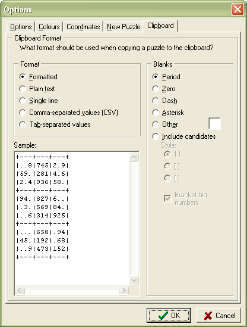

This tab allows you to specify the format of the puzzle when you copy it to the clipboard.

Format Allows you to choose between formatted, plain text and single line.
Blanks Allows you to choose how empty cells should be represented.
Candidates Allows to to choose whether to include cell candidates (pencil marks) and what kind of brackets to surround them. You can also choose whether you'd like brackets around clues or solution numbers (big numbers.)
Sample Shows a sample of how a puzzle would appear with the currently selected options.